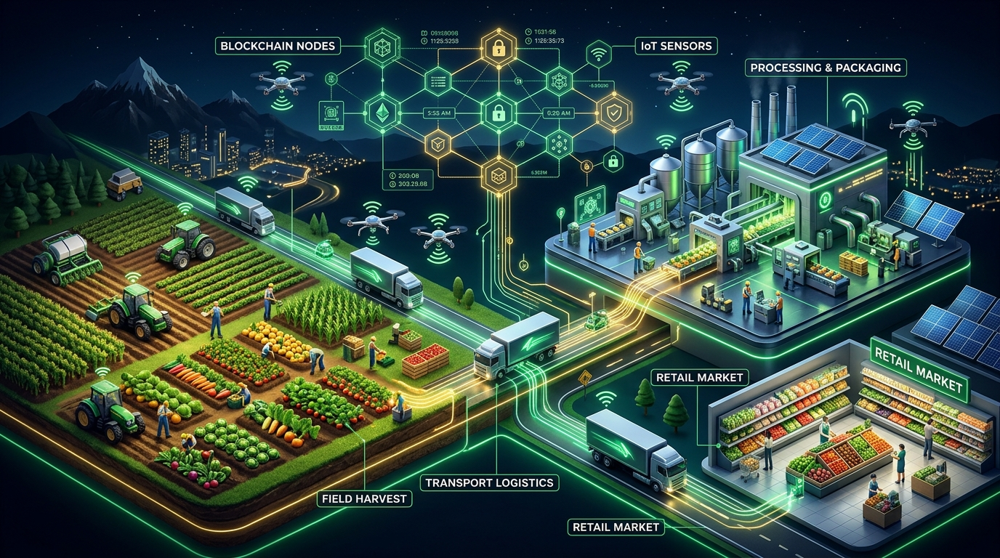
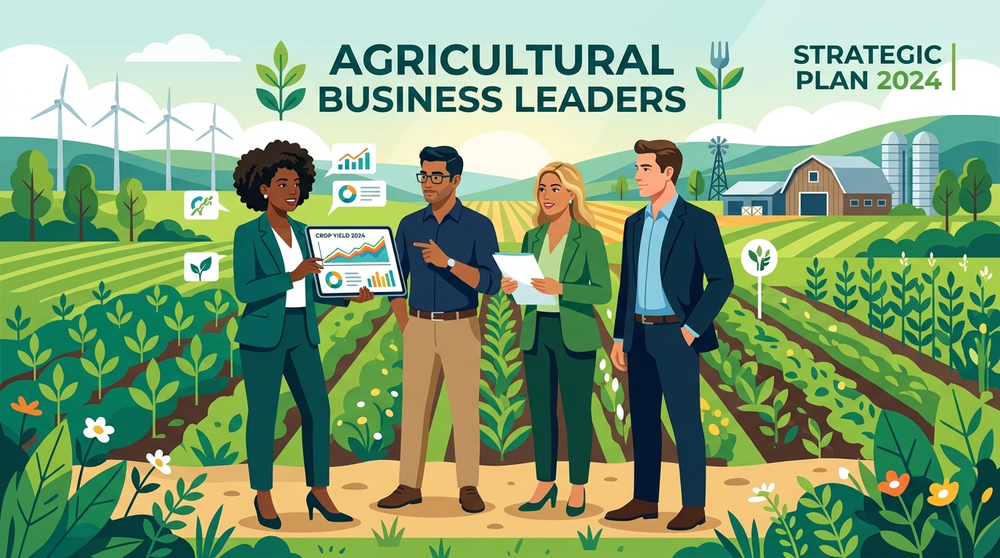
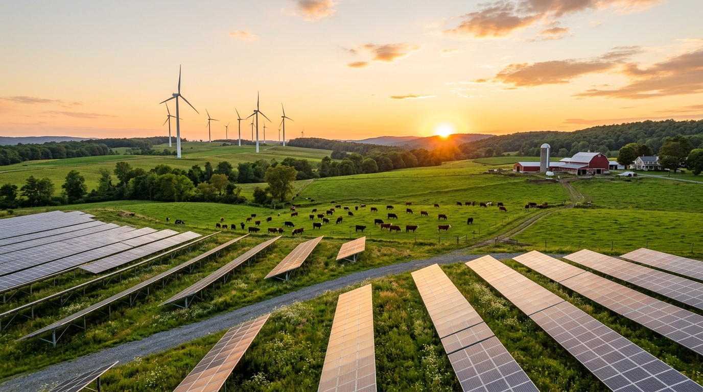
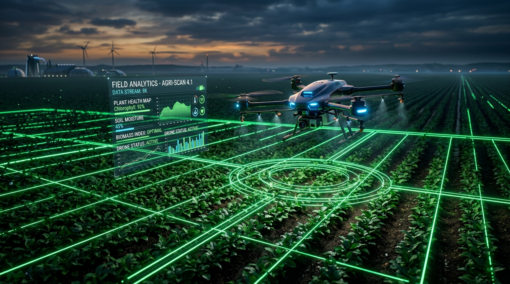

Administración y Gestión de Empresas Agropecuarias · 2026
en Empresas Agropecuarias — Unidad Temática N° 6
6.1 Introducción
Es un proceso fundamental que implica la formulación, implementación y evaluación de estrategias a largo plazo.
Su objetivo es asegurar la sostenibilidad y competitividad en el mercado.
6.2.1 Análisis del Entorno Externo
6.2.1 Entorno Externo
6.2.2 Análisis del Entorno Interno
6.3.1 Formulación de Estrategias
6.3.1 Formulación de Estrategias

6.3.2 y 6.4.1 Implementación Estratégica
Poner en práctica las estrategias formuladas requiere alineación y recursos.

6.4.2 y 6.4.3 Control Estratégico
6.4.4 Casos Prácticos
6.5.1 Liderazgo en el Sector
6.5.2 Gestión del Cambio
6.5.3 Casos Prácticos
6.6.1 Gestión de Riesgos

6.6.2 Sostenibilidad
6.6.3 Casos Prácticos

6.7 Innovación y Tecnología (Parte 1)
6.7 Innovación y Tecnología (Parte 2)
6.8 Comercialización y Cadena de Valor
Maximizar las ganancias asegurando calidad y trazabilidad total.
6.8.3 Estrategias y Gestión
6.9 Desafíos Futuros
Conclusión y Cierre
La dirección estratégica exige articular el entorno, el liderazgo, la gestión de riesgos, la tecnología y la cadena de valor como un sistema totalmente integrado para garantizar la competitividad y sostenibilidad futura de las empresas agropecuarias.